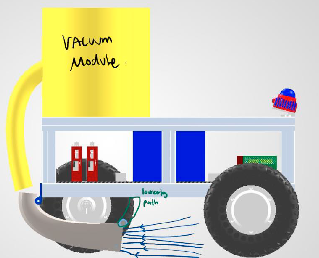
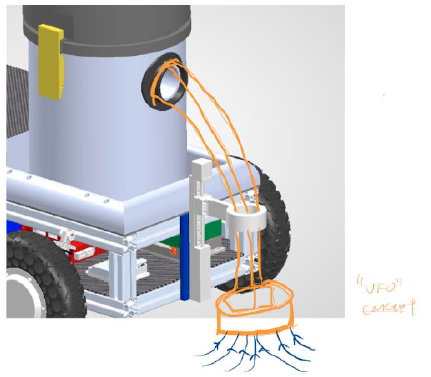

Literature Review: Why Runway FOD Retrieval Needs a New Approach
Foreign Object Debris (FOD) on movement surfaces is an operational and financial hazard to commercial and military aviation. Existing detection systems can localise millimetre-scale debris, but physical retrieval remains dependent on manual intervention and legacy sweeping equipment. Annual direct and indirect FOD damage is estimated at $12-$14 billion, with severe single-engine ingestion events exceeding $1 million in direct repairs.
Limitations of conventional clearing methods
| Method | Mechanical limitation | Operational constraint |
|---|---|---|
| Rotary and vacuum sweepers | High fuel or power draw; filters clog; leakage risk on tarmac. | Bulky footprint and slow active sweeping speed. |
| Friction or mat sweepers | Rubber squeegees wear rapidly and struggle with heavy or embedded items. | Requires towing and restricts manoeuvrability. |
| Magnetic bars | Cannot collect non-ferrous aluminium, titanium, rubber, plastic, or composite debris. | Cannot address biological hazards or non-magnetic hardware. |
| Independent blowers | Expel debris without containment. | Vortex, crosswinds, and jet blast can return debris to active pavement. |
Current detection deployments also leave an open-loop response: operators must notify ground teams and track vehicles across multi-kilometre paths. A coordinated multi-robot system can reduce this response bottleneck by allocating nearby tasks across localised debris clusters.
FOD Types, Design Selection, and Project Scope
The pickup system is scoped to collect inanimate solid debris, including both ferrous and non-ferrous objects. The target range is approximately 4 cm to 20 cm and 4 g to 300 g, from a small screw or fastener through to a bird carcass.
| FOD type | Gripper | Vacuum | Magnet | Mat / sweeper |
|---|---|---|---|---|
| Inanimate solid | Yes | Yes | No | Yes |
| Ferrous metal | Yes | Yes | Yes | Yes |
| Non-ferrous metal | Yes | Yes | No | Yes |
| Animate object | No | No | No | No |

First-Principles Pickup and Intake Design
The pickup concept is governed by the balance between aerodynamic drag and the weight of the debris. The air stream must generate enough force to overcome the object weight, with a safety factor applied during final sizing.
$$F_{drag}=\frac{1}{2}\rho_{air}v^2C_dA_{proj}$$
$$F_{lift} = \Delta P \cdot A_{nozzle}$$
$$v_{min}=\sqrt{\frac{2mg}{\rho_{air}C_dA_{proj}}}$$
$$Q=A_{duct}v_{min}$$
$$P_{elec}=\frac{Q\Delta P_{total}}{\eta_{mech}\eta_{motor}}$$
The top-down intake approach is favoured because pressing the nozzle against the ground creates a temporary seal. When the nozzle lifts, ambient air rushing into the tube creates a short-duration velocity surge that helps launch debris through the corrugated hose and into the collection bin.
Quantitative Sizing and Pressure Losses
| Parameter | Case A: Nut and bolts, 25 g | Case B: Bird carcass, 300 g | Units |
|---|---|---|---|
| Mass | 0.0025 | 0.3000 | kg |
| Dimensions | D = 8 mm, L = 3 mm | 150 mm x 80 mm x 60 mm | mm |
| Projected area | 0.0002 | 0.0090 | m2 |
| Minimum duct diameter | 0.0300 | 0.1000 | m |
| Required pickup velocity | 14.5908 | 26.1008 | m/s |
| Duct area | 0.0007 | 0.0079 | m2 |
| Required flow rate Q | 0.0103 | 0.2050 | m3/s |
| Flow rate | 21.8533 | 434.3597 | CFM |
| Required static pressure | 2135.9414 | 2623.2225 | Pa |
| Estimated motor power | 55.0732 | 1344.3683 | W |
| Pressure loss | Case A: Nut and bolts, 25 g | Case B: Bird carcass, 300 g |
|---|---|---|
| Dynamic pressure | 127.7344 Pa | 408.7500 Pa |
| Nozzle entry | 44.7070 Pa | 143.0625 Pa |
| Duct friction | 112.4063 Pa | 107.9100 Pa |
| Elbow bend | 51.0938 Pa | 163.5000 Pa |
| Filter pressure drop | 1800 Pa | 1800 Pa |
| Total pressure loss | 2135.9414 Pa | 2623.2225 Pa |
Design Iterations and Ground Interface

Side-mounted vacuum module concept.

Front vacuum module and ground-sealing concept.
The design evolved from a side-facing pickup concept toward a top-down, seal-assisted intake. The final direction places the nozzle close to the pavement, uses a compliant ground interface to improve negative pressure, and routes collected debris into a contained bin rather than displacing it onto the runway.
Testing, Results, and Next Improvements
Benchtop testing compared side-entry and top-down pickup. The side approach achieved a low success rate. The top-down approach produced enough air speed to lift screws, but the corrugation in the intake hose prevented some screws from travelling fully into the collection bin. This indicated a steady-state equilibrium between the screw and the air stream.
The next iteration must integrate this sealing effect into the pickup head for every target. Priority improvements are a smoother internal duct path, a compliant skirt or sealing ring, reduced corrugation near the nozzle, and validation against the 300 g design case.
Components Required
| Component | Link | Remarks |
|---|---|---|
| 2800 W vacuum cleaner | Link here | Primary suction source. |
| NEMA17 stepper motor and controller | Link here | Actuates the pickup mechanism. |
| 6 mm shaft, 330 mm long | Link here | Linear motion transmission. |
| Rack and pinion | To be fabricated | 3D printed mechanism. |
| NEMA17 motor mount | To be fabricated | Custom sheet-metal mount. |
| Rack and pinion mount | To be fabricated | 3D printed structural mount. |
- Hilburn, B. G. and Pesmen, B. S., Foreign Object Debris Detection System Cost-Benefit Analysis, FAA Tech. Rep. DOT/FAA/TC-22/47, 2023.
- El-Sayed, A. F., Foreign Object Debris and Damage in Aviation, CRC Press, 2022.
- Jain, S., Prasad, M. S., and Gupta, R., “A Comparison of Manual and Automotive FOD Detection Systems at Airport Runways,” ICRITO, 2022.
- Vidal, Y. L. S. et al., “A Systematic Review of Methods for Cleaning FOD on Runways,” EMES, 2023.
- Yamamoto, H. et al., “Drone-enabled Foreign Object Debris Removal System in ad hoc Situations,” ACRP University Design Competition, 2016.
- Ozturk, S. and Kuzucuoglu, A. E., “A multi-robot coordination approach for autonomous runway FOD clearance,” Robotics and Autonomous Systems, 2016.